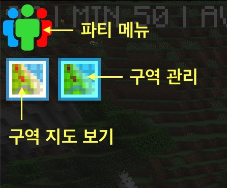
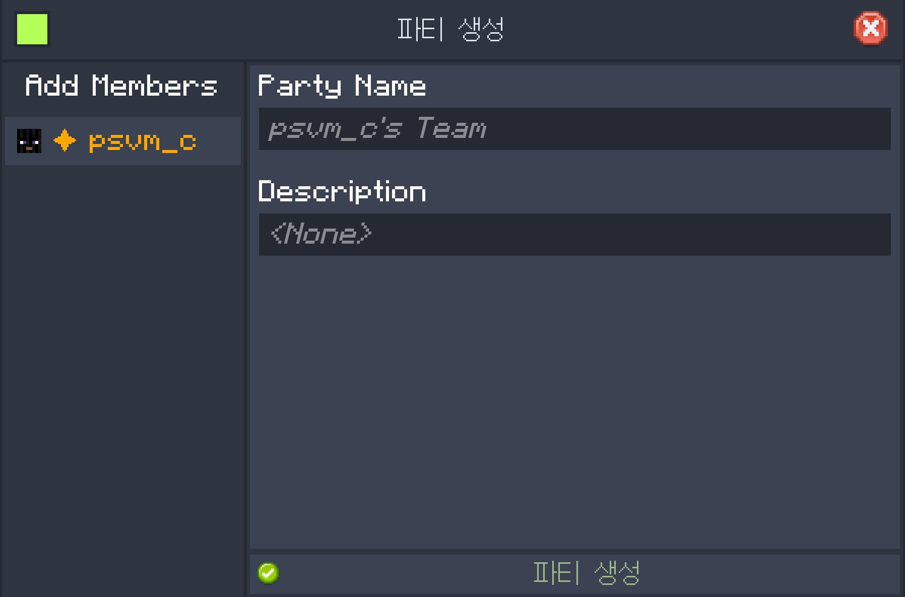

지역보호 및 파티
청크
청크는 마인크래프트에서 구역을 나누는 단위입니다. 가로와 세로가 각각 16 블록, 높이는 384블록입니다.
청크를 보고 싶다면 F3 + G를 눌러보세요.
지역 보호
청크 단위로 내 구역을 지정하면 다른 사람이 내 구역을 함부로 훼손할 수 없습니다.
- 블록 설치/부수기 방지
- 블록 상호작용 방지 (버튼 클릭, 상자 열기 등)
- 엔티티 상호작용 방지 (보트 타기 등)
구역 지정은 최대 8청크까지 지정 가능합니다.

다른 사람들이 지정한 구역을 보려면 인벤토리 창의 좌측 상단에 FTB Chunks 버튼을 눌러 확인하세요.
내 구역 지정하는 방법
- 인벤토리 창을 열어서 좌측 상단에
FTB Chunks: Claim Manager버튼을 누르세요.

- 원하는 청크를 마우스 좌클릭으로 선택합니다. (클릭시 즉시 반영)
- 마우스 우클릭을 눌러 구역을 해제할 수도 있습니다.
파티 만들기
파티를 만들어 구역을 다른 사람과 공유할 수 있습니다. 같은 파티원끼리는 구역내에서 블록 설치/부수거, 상호작용을 할 수 있습니다.

- 좌측 상단
내 팀버튼을 누르세요. 파티 만들기를 누르고 이름과 설명을 적고 파티 생성을 누르세요.- 다시 파티 메뉴로 들어가 우측 상단에
Invite Player버튼을 눌러 초대할 수 있습니다.